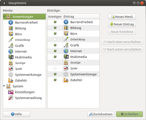

MATE Menü
Dieser Artikel wurde für die folgenden Ubuntu-Versionen getestet:
Ubuntu 16.04 Xenial Xerus
Ubuntu 14.04 Trusty Tahr
Zum Verständnis dieses Artikels sind folgende Seiten hilfreich:
Das MATE-Menü wird automatisch ohne das Zutun des Benutzers verwaltet. So werden beispielsweise automatisch Einträge erzeugt, wenn Anwendungen über die Paketverwaltung installiert oder entfernt werden. Möchte man von Hand Einträge vornehmen oder Einträge editieren, so bietet MATE den Menüeditor Mozo (ehemals Alacarte), der das Bearbeiten des Menüs sehr vereinfacht. Dieser ist von Haus aus bei Ubuntu MATE vorinstalliert. Man findet ihn unter
"System -> Einstellungen -> Darstellung -> Hauptmenü" oder
"System -> Einstellungen -> Hauptmenü"
Alternativ klickt man einfach mit der rechten Maustaste auf das Menü und wählt "Menüs bearbeiten".
Der Editor ist sehr einfach aufgebaut und dadurch intuitiv zu benutzen. Die wichtigsten Funktionen sind entweder Schaltflächen oder man erreicht sie über das Kontextmenü  .
.
Achtung!
Es wird dringend davon abgeraten, den Menü-Editor mit Root-Rechten zu starten! Konfigurationsdaten werden im Homeverzeichnis des Nutzers angelegt und sind dann nicht mehr für den Nutzer lesbar.
Einträge unter "Orte" hinzufügen/entfernen¶
 Man öffnet den gewünschten Ordner oder wählt die gewünschte Datei im Dateimanager Caja an und wählt im Menü "Lesezeichen hinzufügen". Ab sofort ist der Eintrag über "Orte" abrufbar. Durch Löschen des Lesezeichens in Caja wird der entsprechende Eintrag aus dem Menü "Orte" wieder entfernt.
Unter "Orte" findet man in Caja (aber nicht im Hauptmenü) bereits mehrere Ordner, u.a. "Dokumente", "Bilder", "Musik" und "Videos".
Menüeinträge manuell bearbeiten¶
Die Einstellungen für die Menüs und Anwendungen (siehe MIME-Zuordnungen) befinden sich in den Ordnern ~/.config/menus/ und ~/.local/share/applications/.
Menü zurücksetzen¶
Wurde lediglich die Sichtbarkeit der Menü-Elemente verstellt, so genügt es unter "Rechtsklick auf den Panel" -> "Menüs bearbeiten" -> "Zurücksetzen" zu klicken. Möchte man das Menü dagegen wieder in seinen Ausgangszustand zurücksetzen, muss man nur die von Mozo angelegten Verzeichnisse umbenennen. Diese befinden sich im Homeverzeichnis des Benutzers unter ~/.local/share/applications und ~/.config/menus/.
Hinweis:
Durch das Umbenennen der Verzeichnisse im jeweiligen Homeverzeichnis des Benutzers findet MATE bei der nächsten Anmeldung keine Informationen zum Menü und legt diese neu an. Das Umbenennen dient der Sicherheit: Findet man nach dem Ändern kein gewünschtes Ergebnis vor, so kann man zumindest den Zustand vor der versuchten Reparatur wieder herstellen.
Menüeinträge nicht allen Benutzern anzeigen¶
Man kann ausgewählte Einträge vor einigen Nutzern verstecken, z.B. weil es sich um Systemwerkzeuge handelt, die erhöhte Rechte benötigen. Möchte man einige Einträge nur den Benutzern in der Gruppe sudo anzeigen lassen, so setzt man die Rechte der jeweiligen Desktop-Dateien folgendermaßen:
Besitzer:
rootGruppe:
sudoRechte:
rw-r-----(640)
Nach einem Neustart des XServers werden die Änderungen im Menü sichtbar. Alternativ kann man sich auch ab und wieder neu anmelden.
KDE-Einträge in MATE ausblenden¶
Hat man zusätzlich zu MATE den Desktop KDE installiert, dann werden unter MATE auch alle KDE-Programme angezeigt. Möchte man dies verhindern, so öffnet man den jeweiligen Programmstarter [1] des KDE-Programms und fügt die folgende Zeile ein [2]:
OnlyShowIn=KDE
Menüleiste selbst bearbeiten¶
Wenn man anstatt der Menüleiste das "Hauptmenü" zum Panel hinzufügt, kann man jede Menge Platz sparen.
 Übersichtsartikel
Übersichtsartikel- Erstellt mit Inyoka
-
 2004 – 2017 ubuntuusers.de • Einige Rechte vorbehalten
2004 – 2017 ubuntuusers.de • Einige Rechte vorbehalten
Lizenz • Kontakt • Datenschutz • Impressum • Serverstatus -
Serverhousing gespendet von